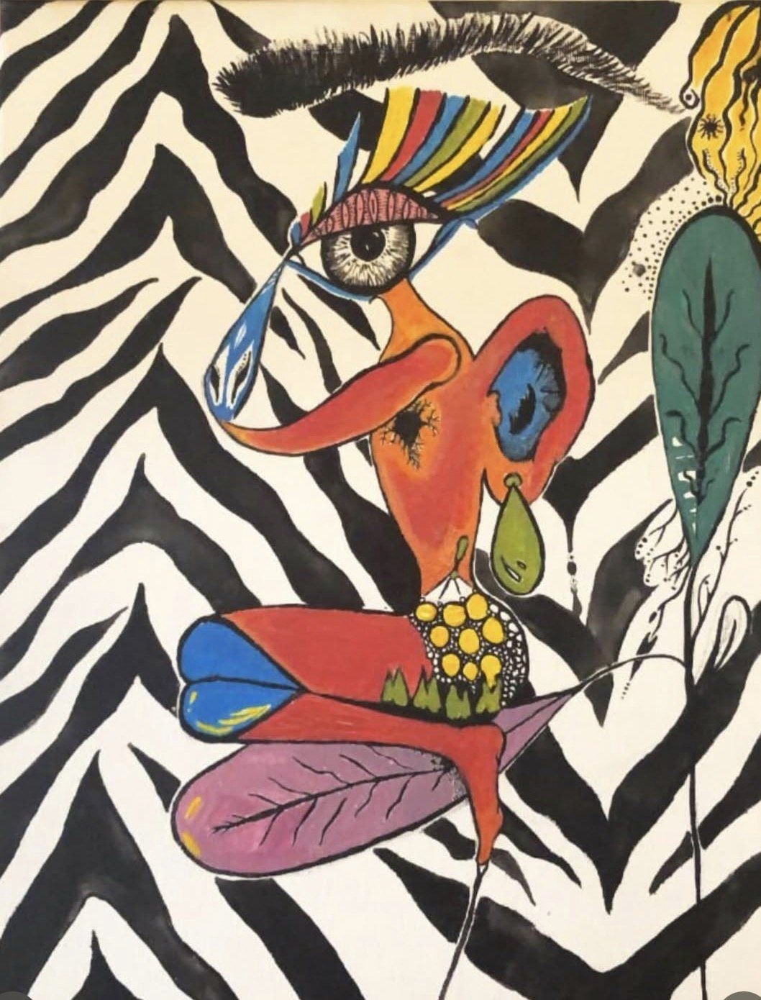
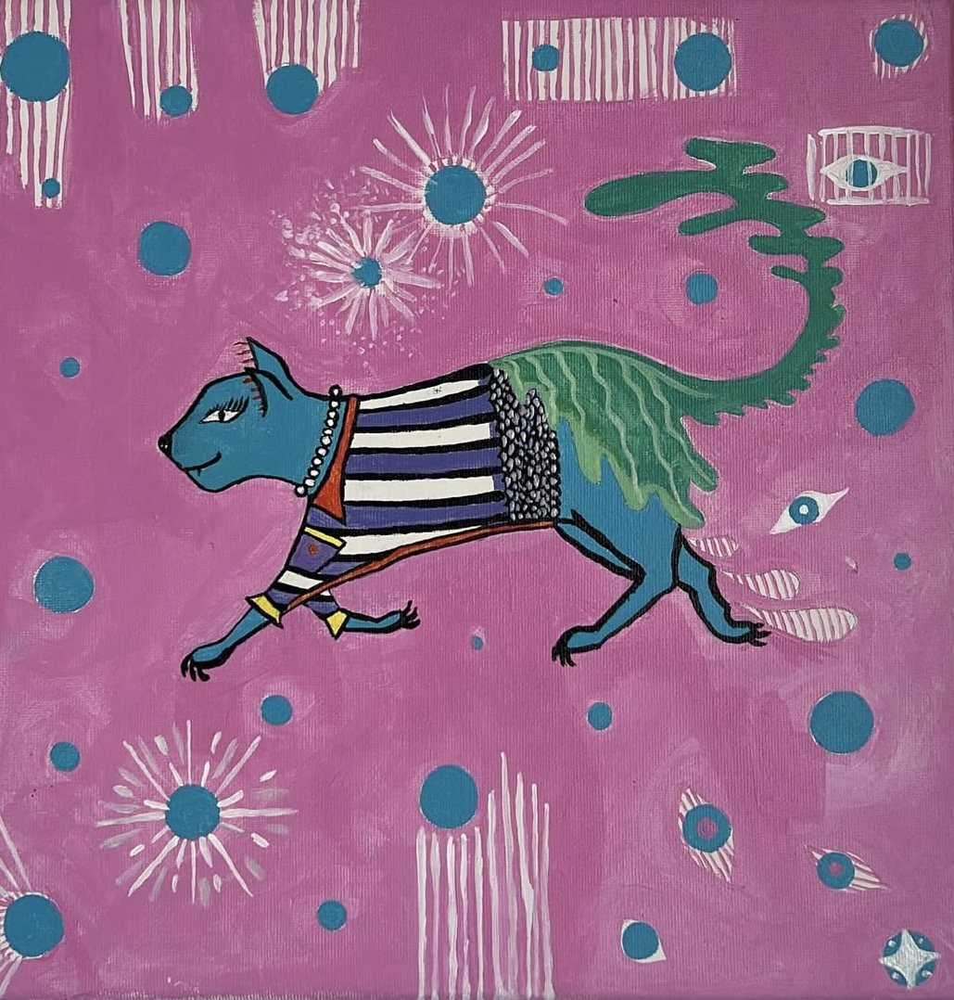

El tarot no adivina, orienta.

La astrología no predice, revela ciclos.
Soy Eva. Uso el tarot, la astrología, la pintura y la música para ayudarte a entender el momento que vives.
Manifiesto
Sales con algo que te sirve, no con un pronóstico.
01 — Sesiones
Astrología, tarot de Thoth y coaching, en un mismo acompañamiento.
02 — Sobre Eva
Cuatro lenguajes, un mismo lugar
Crecí escuchando a mi madre y a mi tía hablar de astrología. A los 15 empecé a estudiar tarot y astrología por mi cuenta, y con los años la pintura y la música se unieron al camino. Cada lenguaje abre una puerta distinta, pero todos llevan al mismo sitio: el autoconocimiento y la transformación.
- i.Tarot
- ii.Astrología
- iii.Pintura
- iv.Música
03 — Obra
Lo que no cabe en una carta, lo pinto.




04 — Eventos
El tarot, en vivo, en tu evento.
2 hEncuentro. Lecturas breves para grupos pequeños.
4 hEvento. Lecturas continuas durante la celebración.
NocheExperiencia completa, como Giro al Alma, en Gràcia.